Pas besoin d'acheter une console pour aider. Donne ce que tu veux, quand tu veux : chaque euro finance du temps de développement libre.
€
Support · montage et prise en main
Besoin d'info ? C'est ici.
La console Brique
Une console à souder soi-même : un ESP32-C3, un écran TFT 2" et 3 boutons. Une fois montée, elle fait tourner Pixel Run et reçoit par câble USB les niveaux créés ici.
Console pré-soudée ? Elle arrive montée et testée : passe directement au branchement USB et à l'envoi de ton premier jeu. Les étapes de soudure ci-dessous ne concernent que le kit.
Environ 1 h 30 de montage pour un enfant accompagné (CM1 → 4ᵉ), puis 10 minutes pour la première programmation.
Outils : fer à souder (~330 °C), étain, pince coupante, multimètre (conseillé), lunettes de protection.
Pour programmer : un ordinateur avec Chrome ou Edge.
Assemblage pas à pas
Câblage standard, celui du firmware principal : chaque fil relie une broche de l'écran ou d'un bouton à une broche de l'ESP32-C3.
Élément
Broche
ESP32-C3
Écran
GND
GND
Écran
VCC
3V3
Écran
SCL (horloge)
GPIO 4
Écran
SDA (données)
GPIO 6
Écran
RES
GPIO 10
Écran
DC
GPIO 5
Écran
CS
GPIO 7
Bouton Gauche
une patte
GPIO 2
Bouton Droite
une patte
GPIO 1
Bouton Saut
une patte
GPIO 3
Les 3 boutons
autre patte
GND
Aucune résistance pour les boutons : le firmware active celles de l'ESP32.
Repérer les faces. Écran et boutons en façade, ESP32-C3 au dos (prise USB-C vers le bord, accessible).
Souder les boutons en premier, ce sont les pièces les plus basses. Gauche et Droite à gauche, Saut (le gros) à droite.
Souder l'ESP32-C3 au dos. Sur le PCB, poser d'abord une seule patte, vérifier qu'il est à plat, puis souder le reste.
Souder l'écran en façade, bien parallèle à la carte avant de souder toutes les broches.
Plaque à pastilles uniquement : tirer les fils au dos selon le tableau, puis relier une patte de chaque bouton à GND.
Contrôler : pas de pont d'étain entre deux broches voisines ; au multimètre, aucun contact entre 3V3 et GND.
Fixer la carte dans le boîtier (4 trous de fixation, alignés sur l'écran).
Premier démarrage
Une console d'atelier a déjà son firmware : on branche, l'écran titre s'affiche. Sinon, l'installer une fois depuis un ordinateur avec l'IDE Arduino 2 :
Brancher la console en USB.
Lancer c3-tft-meatboy/compiler-upload-c3-tft-meatboy.bat : il trouve le port COM, compile et téléverse.
Au tout premier démarrage, la console prépare sa mémoire quelques secondes : normal, une seule fois.
À vérifier : l'écran titre s'affiche dans le bon sens · Gauche/Droite déplacent le sélecteur · Saut valide · « 1 Joueur » lance le niveau 1.
Programmer sa console
Chrome ou Edge sur ordinateur, IDE Arduino et moniteur série fermés, console sur l'accueil ou dans un menu.
Créer : onglet 🛠 Créer, choisir le monde, le héros, le danger, compléter par une phrase, puis ✨ Créer mon jeu.
Regarder l'aperçu du niveau. Corriger la phrase et recréer si besoin.
Mes icônes (facultatif) : chercher une image en anglais (cat, dragon…), la coller ou la glisser.
Envoyer : brancher la console, 📟 Envoyer sur la console, choisir le port. Le niveau démarre aussitôt.
Rejouer plus tard : accueil de la console → Mes niveaux (les 8 derniers, gardés même éteinte).
Dépannage
Symptôme
Cause probable
Solution
Écran noir ou blanc
Fil SCL/SDA/DC/CS inversé, ou soudure sèche
Comparer au tableau, refaire les soudures de l'écran
Un bouton ne répond pas
Patte non soudée ou pas reliée à GND
Ressouder, tester au multimètre
L'ESP32 chauffe
Pont entre 3V3 et GND
Débrancher tout de suite, chercher le pont
Aucun port proposé
Câble de charge seule
Changer de câble USB
« Port occupé »
IDE Arduino ou moniteur série ouvert
Les fermer, réessayer
« Console occupée »
Partie à 2, monde ou mini-jeu en cours
Revenir à l'accueil de la console
« Pas de réponse »
Ancien firmware sans lecture USB
Réinstaller le firmware (section 04)
« Niveau trop gros »
Niveau trop haut
Demander un niveau plus court
Téléversement échoue
Liaison USB capricieuse
Maintenir BOOT en branchant, ou esptool --no-stub
Recherche d'icônes vide
Filtre réseau de l'école
Autoriser api.iconify.design
Fiche de test au multimètre (console V1)
Console débranchée, multimètre en mode continuité (bip). Une ligne à cocher par fil, puis les ponts d'étain à chercher entre broches voisines.
Atelier · Brique en classe
Ils fabriquent. Ils créent. Ils apprennent.
📚Brique en classe : l'atelier
Les élèves fabriquent leur console, créent leurs jeux en parlant à une IA, et chaque jeu reprend la leçon du jour : vos questions de cours s'affichent quand on atteint l'arrivée.
Du CM1 à la 4ᵉ · par groupes de 8 à 30 · de 1 séance à un projet sur l'année.
En atelier, de la plaque à trous à la console
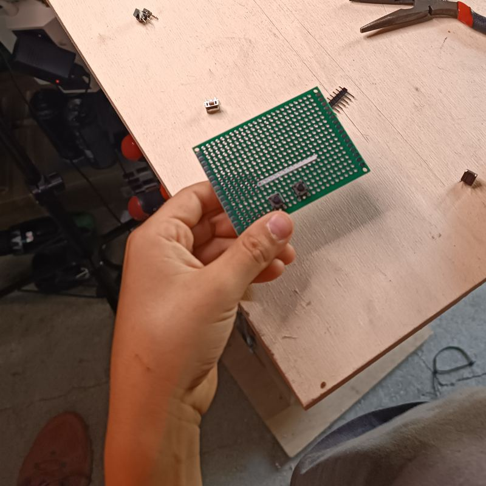
La plaque à trousUne plaque d'essai en main : tout commence ici.
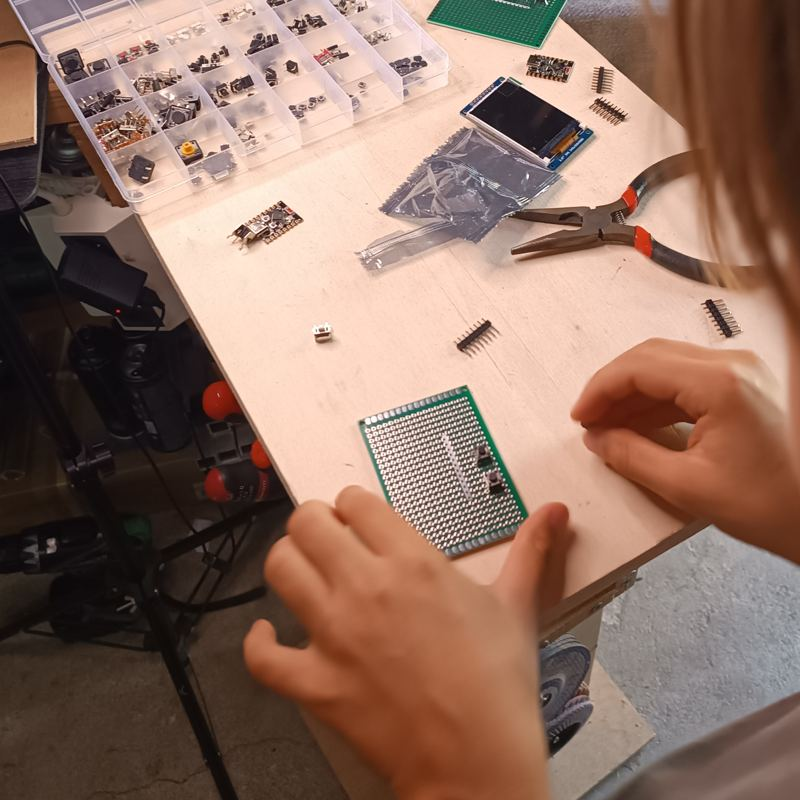
Les composantsÉcran, boutons, connecteurs : on prépare son plan de travail.
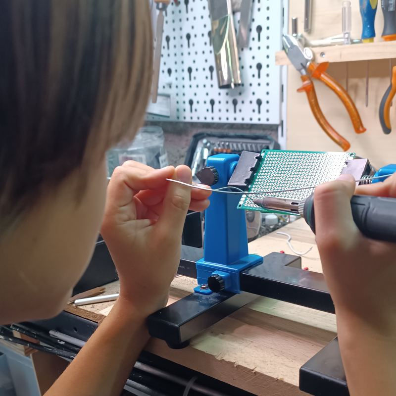
SouderLe fer d'une main, l'étain de l'autre, la plaque tenue par un support.
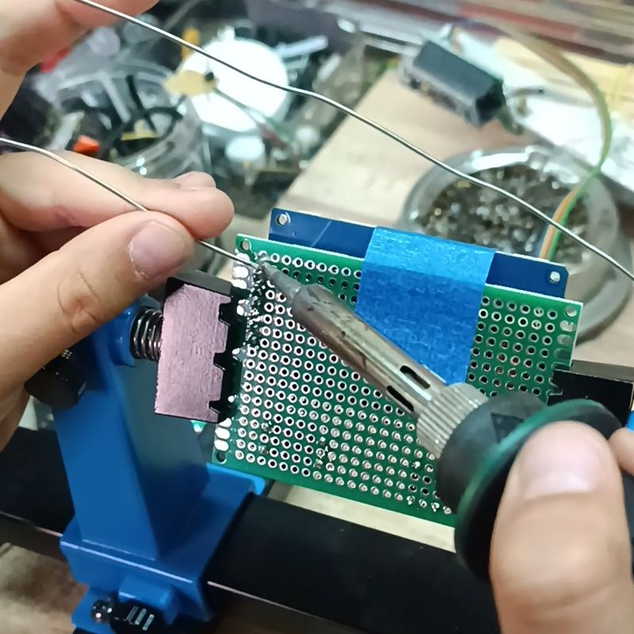
Pas à pasChaque patte soudée, une par une, avec soin.
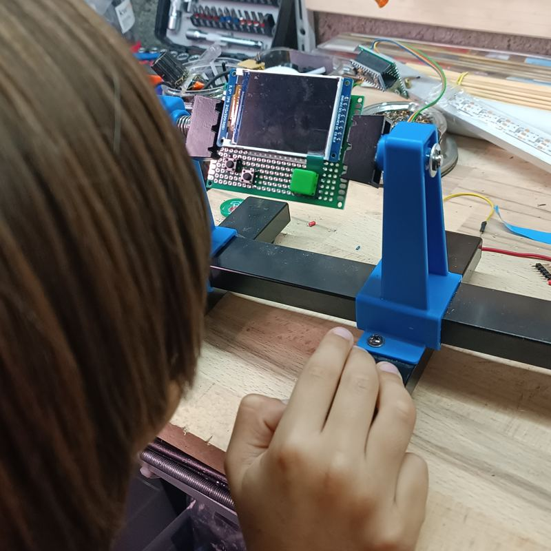
L'écran est poséLa console prend forme sur le support.
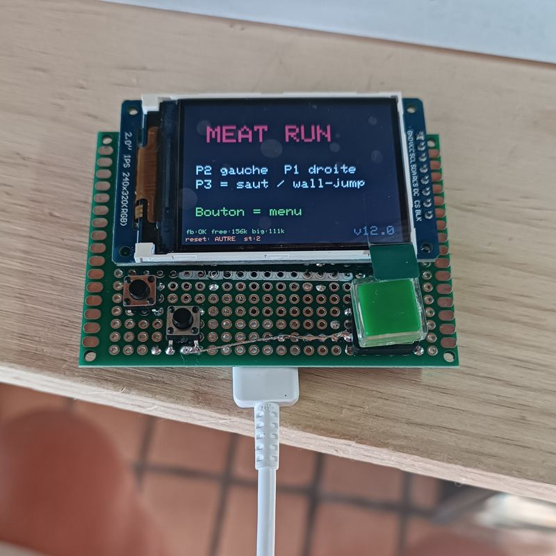
Ça s'allume !Le premier jeu tourne sur l'écran : le moment préféré.
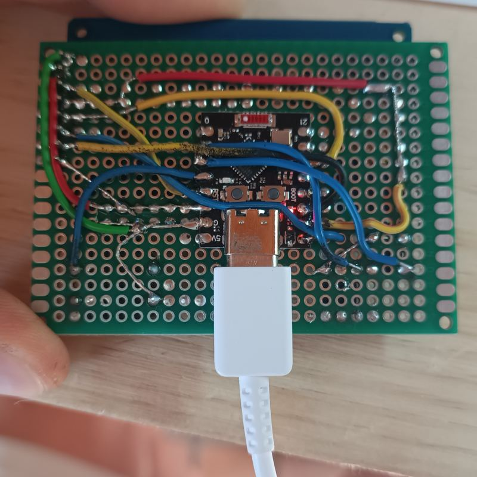
Les fils dessousLe câblage vu de dessous : chaque fil relie une broche à l'ESP32-C3.
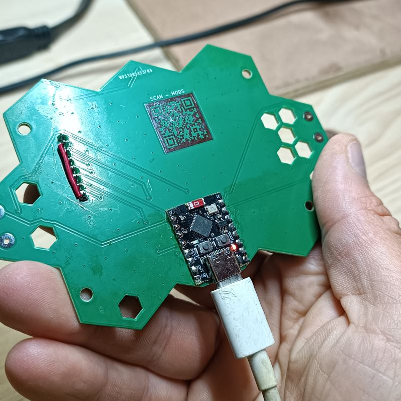
Le circuit BriqueLe circuit imprimé hexagonal remplace les fils : plus simple à monter.
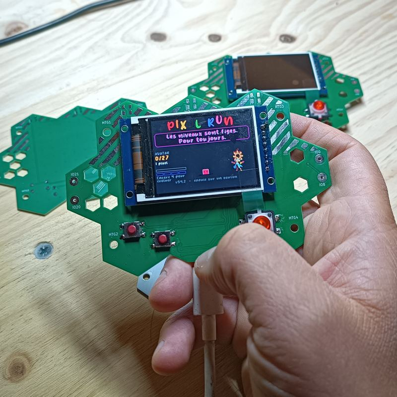
Les consoles terminéesChacun repart avec la sienne, et ses jeux dedans.
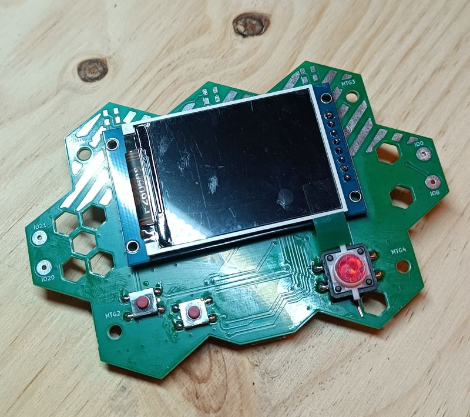
La console BriqueÉcran couleur, trois boutons, un cerveau ESP32-C3.
Atelier manuel
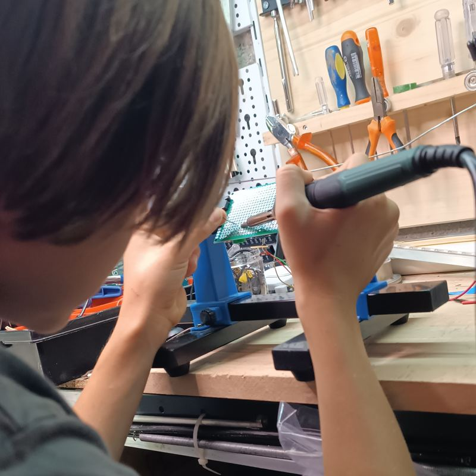
Chaque élève monte sa console : microcontrôleur ESP32-C3, écran couleur, trois boutons, soudure et assemblage du boîtier.
Pas de soudure possible (âge, matériel, temps) ? La console existe en version pré-soudée, montée et testée : l'atelier commence directement par la création.
Comprendre ce qu'il y a dans un objet numérique, suivre un plan de montage, travailler avec soin et sécurité (lunettes, fer à souder encadré).
Personnalisation
Le monde, le héros, les couleurs, les ennemis, le décor : chaque élève compose son univers, cherche ses images et nomme son jeu.
Faire des choix esthétiques, chercher et sélectionner des images, présenter sa création aux autres.
Coder avec l'IA
L'élève décrit son jeu en français (« un volcan très haut avec des ressorts et 3 vies »). L'IA traduit en réglages, l'élève teste sur sa console, corrige sa demande, recommence.
Formuler précisément, tester et corriger (démarche d'essai-erreur), regarder « sous le capot » le code produit, comprendre ce qu'une IA sait faire… et ce qu'elle ne sait pas : les demandes impossibles deviennent des « idées des joueurs ».
La couche pédagogique
Dans l'espace Animateur, vous écrivez vos questions de cours (QCM, 2 ou 3 réponses). Elles sont insérées d'office dans tous les jeux du groupe : à l'arrivée, la console pose une question avant d'afficher la victoire, et montre la bonne réponse en cas d'erreur.
Français, maths, anglais, histoire, sciences… La leçon devient la clé du jeu, révisée à chaque partie, y compris en jouant au jeu d'un camarade. Vous suivez le taux de bonnes réponses par question.
Mode atelier
Le jour de l'atelier, activez le mode atelier du groupe et indiquez la matière du jour : vos élèves ne voient que les jeux de leur groupe (pas la communauté publique ni la boutique), et leurs créations restent privées au groupe.
Une prof de français fait une séance de français, un prof de maths des maths : les jeux portent la leçon que vous avez choisie.
Déroulé type
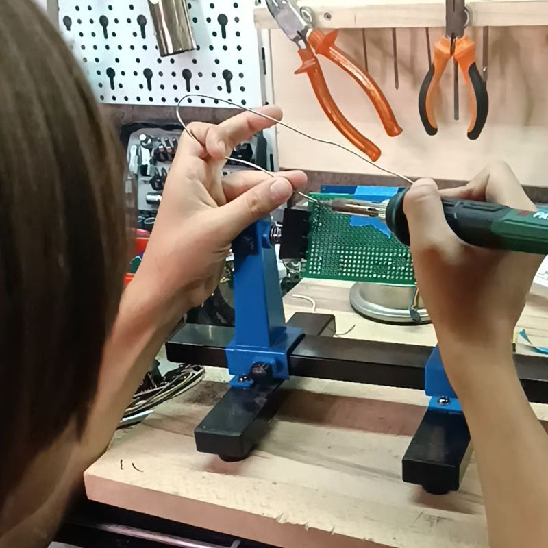
Séance 1 — montage et soudure de la console (à sauter avec des consoles pré-soudées).
Séance 2 — découverte : premier jeu guidé, envoi sur la console.
Séance 3 — création libre avec l'IA, personnalisation, questions de cours.
Séance 4 — publication, échange des jeux par code, courses à plusieurs.
Cadre et sécurité
Les élèves n'ont ni compte ni adresse mail : un pseudo et le code du groupe suffisent. Seul l'adulte se connecte (lien reçu par mail). Vous pouvez masquer un jeu, supprimer une idée, libérer un pseudo.
Pas de nom, pas de photo, pas de messagerie entre élèves. Les textes affichés sur les consoles sont filtrés.
Pour commencer
Ouvrez l'espace Animateur et créez un groupe : vous obtenez un code (ex. LUNE-42).
Écrivez vos questions de cours et, si besoin, activez le mode atelier.
Les élèves cliquent « Rejoindre mon groupe » avec ce code et un pseudo.
Espace animateur
Ton groupe, en un coup d'œil.
Espace animateur
Entre ton adresse mail : tu reçois un lien de connexion (pas de mot de passe). Les enfants, eux, ne donnent jamais de mail.
Des trous cachés (ils s'ouvrent au dernier moment)
Des plateformes
La taille
Le relief
Des trous
Le dessin
Briques d'acier (incassables)
Combien de vagues
Et en plus…
largeur : 1 à 4 écrans
hauteur : 1 ou 2 écrans
plafond (ou pas)
trous cachés
plateformes (ou pas)
pics, pics cachés, ennemis, étoiles
une porte au bout
difficulté
taille : 6 à 12 cases
relief : plat, collines, montagnes
trous
pics, pics qui sortent, pics cachés
étoiles
un drapeau au fond
difficulté
vies, chrono
dessin : plein, pyramide, damier, cadre, au hasard
vitesse (lent / vite)
difficulté
vies
briques d'acier
sans bonus
nombre de vagues
Les briques que l'IA sait utiliser
# sol / mur
R ressort
^ pic
H pic caché
W scie
C bloc fragile
I glace
* étoile
G arrivée
Réglages
hauteur (court / haut)
difficulté
gravité (lune / lourd)
vitesse (lent / vite)
double saut
parcours : tour, puits, escaliers, îles, varié
hauteur : 1 à 5 écrans
Choisis, écris une phrase, puis appuie sur « Créer ».
🎨 Mes icônes (pas obligé) : choisis quoi remplacer
…ou trouve une image sur le web : clic droit → « Copier l'image », puis Ctrl+V ici.
Tu peux aussi la glisser ici ou .
🌈 Mes couleurs (pas obligé)
Ciel
Plateformes
⚙️ Mes règles (pas obligé)
But
Chrono
Vies
Victoire
Mon niveau
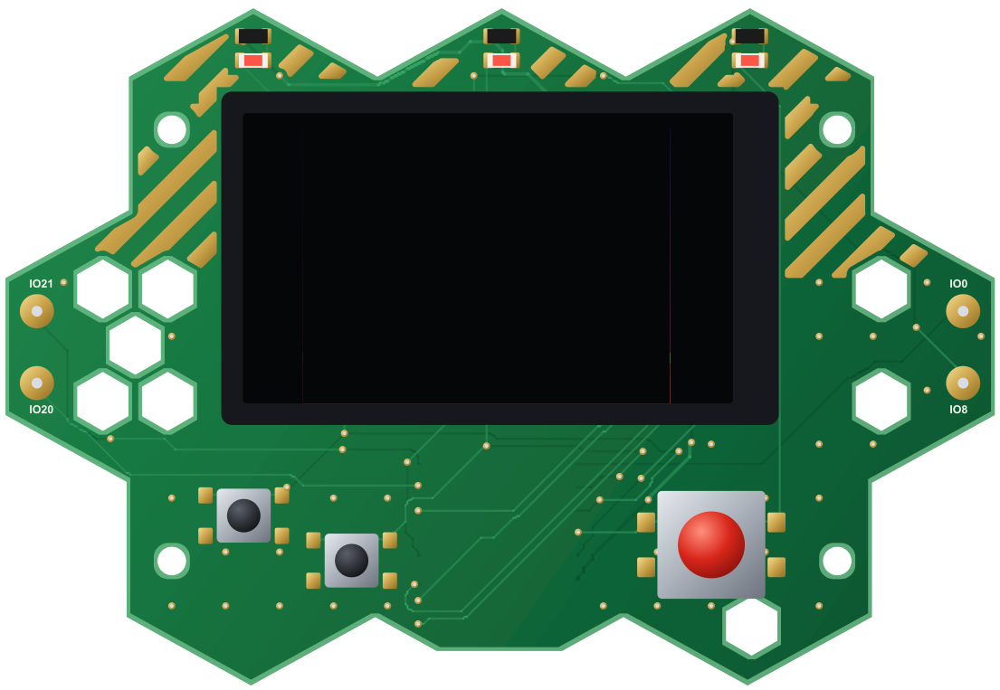
Pour jouer, envoie ton niveau sur la console : c'est elle qui fait tourner le jeu.
🔄 Mettre à jour ma console
Le numéro de ta console s'affiche sur son écran de démarrage (ex. « v55.3 - appuie sur un bouton ») ; branche-la ici pour qu'on compare.
La nouvelle version du jeu de la console. Attention : on repart du niveau 1 (niveaux, pièces, skins remis à zéro) ; tes jeux de « Mes niveaux » sont gardés. Chrome ou Edge sur ordinateur, câble USB branché, environ 1 minute.
Ce navigateur ne sait pas mettre à jour la console : ouvre la page dans Chrome ou Edge, sur un ordinateur.Il faut ouvrir la page en https (ou sur localhost).
La console n'est pas trouvée ? Débranche-la, maintiens son bouton BOOT, rebranche-la, puis réessaie.
🔧 Voir sous le capot
Ce que j'ai fait
Tes essais apparaîtront ici : ce que tu as demandé, ce qui est arrivé, ce que tu veux corriger.